INTRODUCTION
INTRODUCTION
INTRODUCTIONMaximum entropy processing is a technics which permits to enhance the resolution and signal/noise ratio of any measure on a given system, using certain a-priori information. The GIFA program implements this technic for the case of NMR spectra.
PRINCIPLES
Data : Dn [1]
and that the reconstructed spectrum is another array of M real points :
Spectrum : Fm [2]
Pseudo data R can be reconstructed from F by applying a transform Tf (called the transfer function) on F, characteristic of the measure (typically the Fourier transform in FT-NMR), where Tf is assumed to be linear as defined by a matrix T(k,l).
R = Tf(F) 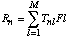 [3]
Then the quality of the reconstructed spectrum F can measured from the
value of ChiSquare C:
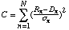[4]
where 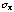is the amount of noise in nth data point.
In NMR spectroscopy, the noise can be assumed to be constant over the
data points, so [4] becomes :
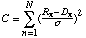[5]
One considers to have extracted all the possible information available
in data D, when C is equal to N. The principle of the inverse processing
technic is to reconstruct a spectrum F such that C is equal to N.
Maximum entropy processing consists in choosing, among all the possible
spectra such that C=N, the one which maximizes the value of the entropy
S, being defined by :
(Ln(x) is the Neper logarithm of x)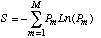[6a]
where 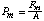 and 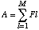 [6b]
This definition of entropy is referred here as the GIFA equation for
entropy, a more classical equation for entropy is :
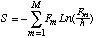[7]
which is later on referred as the Gull & Daniel equation for entropy.
With definition [6], the maximum value of S available is Ln(M) and is
independent of the scaling of the data.
To maximize the entropy a function Q is constructed with the Lagrange
multiplier  (lambda):
(lambda):
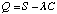[8]
The function Q will be then maximized iteratively with growing values of
 until a spectrum for with C=N is found.
until a spectrum for with C=N is found.
To find where Q is maximum let's compute the vector dQm, the derivative
of Q. At the maximum point of Q, dQ is the null vector.
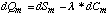[9]
and
dSm = Ln(Pm) - S [10]
with the GIFA entropy, and:
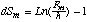[11]
with the Gull & Daniel entropy and
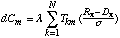[12]
Note that dC is proportional to 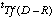where 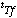is the transpose of Tf.
dQm = 0, implies :
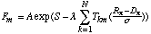[13]
Eq [10] is obtained with the GIFA entropy, and for the Gull & Daniel
entropy becomes :
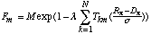[14]
For a current 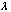, the quality of the current spectrum F to maximize the function Q, can be monitored with the angle between dC and dS :
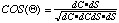[15]
with
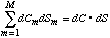
Where A*B notes the dot product of the 2
vectors A and B. 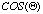should be equal to 1 if F is
the maximum entropy spectrum for the given .
The value of the optimum 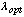is computed from the
vectors dS and dC with one of the following equations : such as
such as
cos(dQ,dS) = 0
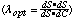[16.1]
or such as
cos(dQ,-dC) = cos(dQ,dS) [16.2]
The equation used depends on the value of the LAMBCONT switch (=1 for
16.1 and =2 for 16.2)
We has shown that a gain could be obtained in the fixed point iteration
process by applying the following equation to compensate for
non-linearity in equations [13,14] :
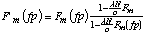[17]
FINDING THE MAXIMUM OF Q.
Field c describes the way the search direction is chosen. c=0 and c=1 choose the fixed point direction defined by equations [13] and [14] respectively, i.e. the Gull & Daniel or the GIFA fixed point equation. c=2 chooses the steepest descent method, i.e. dQ as search direction, and c=3 chooses the conjugate gradient direction.
Field b describe which method will be used to go along this direction. b=0 indicates that a given step will be taken where the value of the step is STEP; i.e. the current image I is replaced by I+STEP*Grad, where grad is computed as described above. b=1 means that a 1D maximization will be done using a parabolic fit.The number of iteration for the 1D search is determined by MINITER, the maximum number of steps, and TOLERANCE, the stopping criterion for the 1D minization based on the derivative (new as of version 2.5), the step is chosen between 0.0 and STEPMAX. If b=2 then a bracketing is done before the 1D maximization, thus one can no longer constrain the step between 0.0 and STEPMAX.
Field a determines wether the Wu correction is to be used (a=1) or not (a=0).
You should note that certain combinations in ALGO are meaningless. For instance the Wu correction should not be done when using gradient methods (c = 2 or 3).
Summary for ALGO.
DOING A SIMPLE RUN
You then chose a data-set (an FID or a pseudo FID from the IFT of a spectrum). The FID should correspond to a phased spectrum, and should be in complex form (itype=1 or 3 (for 2D)). The FID should be mostly signal rather than noise. You can reconstruct a much larger spectrum than FID, thus realizing the equivalent to zero-filling.
Be sure that the noise is evaluated correctly. It is evaluated automatically when reading a file from the last ten percent, or by hand with the EVALN command on the time domain data.
Choose the deconvolution with LB; the number of iterations (ITER).
Let it go (MAXENT command) and give the size of the spectrum you want (should be at least as large as the size of the data for reliable results). If the convergence is not reached you can CONTinue the process for more iterations.
During the iterations, if the display is on (with DISP1D or DISP2D commands) the current image will be shown every NDISP iterations.
The GET DATA command will permit you to start again from scratch your Maximum Entropy run if you wish (typically after changing some parameter). The command RESIDUE will bring in the working area the residue of the current Maximum Entropy spectrum : i.e. R-D in the notations of eqs[1-3]. The SHOW RESIDUE command will only show the residue without loosing the spectrum.
INTERPRETING THE RESULTS
There are 2 important values to monitor during the Maximum Entropy run :
CHISQUARE and CONV. CHISQUARE should get down to 1.0 at the end of the
process. If the iteration stops before CHISQUARE is 1 you should
increase the number of iterations (ITER) and CONTinue the run. The value
of CONV always starts at 1.0 but should dive to 0.0 quickly and stay
smaller than 0.1 during the all process since a good convergence is
characterized by angle  of 0. The Maximum Entropy
reconstruction of the data set is thus defined as having a ChiSquare of
1.0 and a conv of 0.0.
of 0. The Maximum Entropy
reconstruction of the data set is thus defined as having a ChiSquare of
1.0 and a conv of 0.0.
If you have trouble to reach this point, it may be due to several problems, here are the most common ones :
* The noise has not been evaluated correctly and is too large, thus CHISQUARE cannot reach 1.0. Reevaluate NOISE with the EVALN command on your data-set.
* There is no Maximum Entropy solution to the problem; This occurs when the problem was not stated correctly. Typical cases are : -incorrect deconvolution (LB or GB is too large, try to decrease it) -incorrect spectrum for Maximum Entropy (negative wings, delta functions mixed with broad features, etc... try correcting the spectrum before processing) -incorrect processing condition (spectrum size smaller than data size, strong base line distortion not corrected by windowing out the first points, etc...)
* The convergence is too fast. This may occur when the signal to noise is very small. Since the process starts with a converge of 1.0, it takes several iterations to reach a small convergence, so a minimum of 4-5 iterations is needed. In the case you get convergence in 2-3 iterations with a large CONV, try to decrease LAMBSP from 5 (standard value) down to 3 or 2. This will slower the convergence process.
* It is a very difficult problem. For instance a 512x512 points data-set with antiphase J-deconvolution in F2, inphase in F1, gaussian deconvolution on the top. In such a case you might have problems to start the convergence. Try a smaller data set to start the process (by WINDOWing out the edges of the data-set), and go to larger data-set further on the iteration. You may also try the CONJG (algo=23) algorithm (Conjugated gradients) which is somehow slower but more robust than the GIFA (algo=111) one.
* The dynamic (i.e. the ratio of the larger signal to the smaller signal) is very large, and the Signal-to-Noise is very high. In such a case it might take a lot of iterations to converge correctly, just keep-on running, and buy a faster computer.
PREPARING THE DATA-SET
However special care should be taken in all this preprocessing. First of all, you should not apply any apodization function before the first FT, in order not to alter your data. Secondly, most of the cited processing are not causal (typically 1st order phasing and extracting), so the piece of FID you end will end up with, after inverse Fourier transform will not be causal either, i.e. could not have been produced by any physical device. The most characteristic feature of this behavior is that the end of FID no more decreases, but increases suddenly, near the end, in a trumpet-like pattern. Actually, it can be shown from the Bayard-Bode relations (also called Kramers-Krönig), that the non causality is borne in the imaginary part of the spectrum. So in order to avoid this problem I propose to do the first Fourier transform with zero-filling, in order to introduce redundancy between real and imaginary parts of the spectrum, then to throw away the imaginary part, then to use the real-to-complex inverse Fourier transform to reconstruct the FID. You will thus construct a truly causal FID, since the Bayard-Bode relations which forces the real and imaginary parts of the spectrum to be Hilbert transforms of each other, is included in the IFTBIS algorithm. By the way, if you which to perform a Hilbert transform with GIFA just type (starting with a real spectrum) :
iftbis phase 90 0 ftbis ; equivalent to hphase 90 0
To sum up, I propose the following sequence to preprocess a FID before Maximum Entropy processing.
; to prepare data-sets for Maximum Entropy (1D version)
chsize *2 ft ; first FT with no apodization but zero-filling
; (could be REVF RFT if you have a BRUKER)
phase %% extract %% ; phase it, extract it
real iftbis ; throw im. part, then inverse FT.
MISCELLANEOUS POINTS
The transfer function Tf() and its transpose are coded in the subroutines transform and ttransform. These subroutines mostly dispatch different subroutines depending on the dimension (1D or 2D) and the deconvolution used.
The functions Tf() and 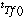,even being linear, are not coded with matrix manipulation, but rather with the very efficient FFT (Fast Fourier Transform).
*Deconvolution
Deconvolution is done thru the multiplication of filter functions. How a filter is set is defined by the variable FILTER. If FILTER is 0 no filter is computed and no deconvolution applied. If FILTER is 1 a filter is computed from the actual values of LB, GB, JCONS and DIM. The filter is computed for each MAXENT or MAXENTCONT command. If FILTER is 2, then the filter is used as defined previously by the command PUT FILTER, which loads the filter buffer with the current data-set.
*Ignoring points.
Certain points in the data-set may be invalid or distorted. a window buffer is used to tell which points are to be ignored when computing eqs [5,12-14]. Points in this buffer are set to 0 when to be ignored and to 1 otherwise. The WINDOW permits one to set and reset points in this buffer. In a sense the WINDOW buffer can be seen as holding 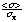for each data point n. So the value of window is 0 when the data point has infinite noise level.
The PUT, GET, SHOW, APPLY commands allows handling of the filter and window buffers.
*Exponential Sampling
Another case where the WINDOW buffer should be used is when processing data-set with not contiguous sampling, such as exponential sampling. The idea behind these alternative sampling schemes is that some of the sampling point have been dropped out of the regular sampling. This permits to keep using the regular Fourier transform in the transform step. The GWINDOW command permits to load a WINDOW that describes which points have been dropped and which points have been kept. GWINDOW reads in a text file, with one entry per line, each entry telling which point should be set to one in the WINDOW buffer.
*Constraining the sum of the points.
The sum of the point of the spectrum A is a very important parameter in the process; it determines the computation of the entropy S (eq[6]). For the same spectrum, adding a continuous level, thus raising the baseline will change A and raise the value of S.
During regular processing, the sum of the points of the spectrum is equal to the first point of the data (FID), due to the properties of the Fourier Transform. However, when the first point in the data is not taken into account in the process (-when window(1)=0, -when antiphase J-deconvolution is used) one has to explicitly constrain the sum of the points so that it does not shoot up to the stars.
The variable SUMCONS (sumconstraint) switches on a process which will try to keep the sum as small as possible. It actually change the function Q being maximized to :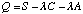[18]
i.e. the same Lagrange multiplier is used for the two constraints.
*Multi channel Processing
In some cases it may be useful to deconvoluate the same data set with a range of deconvolution functions, from a single data-set, reconstructing a series of spectrum corresponding to a series of deconvolutions. This is performed with the variable NCHANNEL which tells GIFA how many "channels" will be used in the reconstruction. In such a case, NCHANNEL different spectra will be generated from a single FID, each spectrum will use a different version of the FILTER function for deconvolution. Thus the FILTER variable should be set to 2 (user defined filter) and the filter buffer loaded with N different deconvolution functions. When NCHANNEL is greater than 1, the PUT FILTER command will prompt you for the channel number to use.
Loading a set of exponential filtering :
set n = 10 ; number of channels
one nchannel $n filter 2 ; prepare buffers
for i = 1 to $n
em 1.0 put filter $i ; ith filter is iHz
endfor
exit
New with version 2.5, each filter channel is now normated, such as to avoid spurious effects due to very different norms of each filter functions.
IMPLEMENTATION
*Lambda Controlling :
As said earlier, the actual value for lambda is computed from the
vectors dS and dC (eq [16]). However equation 16.1 is valid only if the
angle dS,dC is larger than 90deg. (conv < 1), otherwise lambda is not
modified. In the program, is multiplied by a
scalar 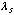before use. A large  makes the convergence faster but may generate
instabilities during the iteration.
makes the convergence faster but may generate
instabilities during the iteration.
To avoid drastic modifications of lambda, lambda is actually not set to the value of 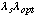, but moved toward this value with :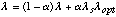[19]
In the program [[alpha]] is called INCREM, is called LAMBSP.
*Handling exponential functions.
The exponentials which appears in eqs [13,14] may lead to a very
unstable behavior of the program, to avoid such a behavior, a special
function sexp() is used instead of the exp() function. The sexp(x)
function is equal to exp(x) for all x
This modification of the exp() function is perfectly valid when using
the GIFA equation (eq [13]) as long as explim is not too small. Typical
values of explim are 0 to 2 in 1D and -3 to 0 in 2D.
*Initial Image
The initial image is chosen from the ttransform 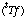of the current data. The mean value is computed,
multiplied by the variable IVALUE, and this value is used for the
starting flat image
Correspondence between the variables used in the program and the
notation in this text (CAPITAL letters are for interactive
commands/variables, small letters are for fortran variables)
M : sizeimage
N : sizedata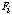: image(i)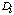:
data(i)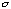: noise NOISE
S : ent ( f(S;Ln(M)) ) output at each iteration
C : chi2 ( f(C;Noise) ) output at each iteration
A : sum output at each iteration
step : step STEP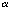: increm INCREM
explim : aa expa=exp(aa) EXPLIM
ivalue : ivalue IVALUE
 : lambda LAMBDA
output at each iteration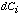: dchi(i)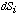: dent(i): conv =
1+cos(Theta) output at each iteration
: lambda LAMBDA
output at each iteration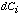: dchi(i)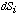: dent(i): conv =
1+cos(Theta) output at each iteration : lambsp
LAMBSP
: lambsp
LAMBSP